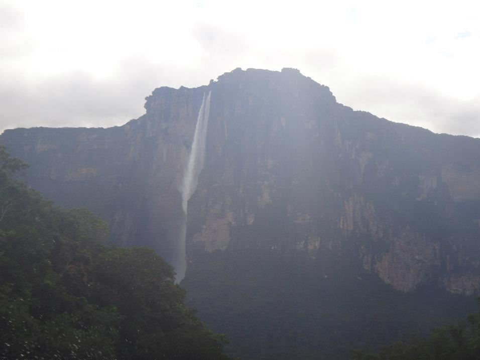

Resumen
Venezuela Natural es una agencia de ecoturismo que organiza viajes, escapadas y expediciones por los parques nacionales, las islas y las montañas de Venezuela.
En Venezuela Natural organizamos viajes y escapadas por los destinos más impresionantes del país: el Salto Ángel en el Parque Nacional Canaima, los cayos de Los Roques, los Relámpagos del Catatumbo sobre el lago de Maracaibo, las dunas de los Médanos de Coro, la costa de Tucacas y Morrocoy y la selva de los estados Apure y Amazonas. Trabajamos con guías locales y alojamientos verificados para que conozcas el país con seguridad y comodidad.
Ofrecemos rutas de senderismo, paseos a caballo, visitas guiadas, observación de aves y paquetes para familias o grupos de amigos. Nos encargamos del transporte, las reservas y el itinerario: tú solo tienes que disfrutar.

Destinos destacados
Salto Ángel y el Auyán-tepui
BolívarCon 979 metros de caída, el Kerepacupay Merú es la cascada más alta del mundo. Se llega en curiaro por el río Churún y se sube a la base del Auyán-tepui, una meseta con paredes verticales de hasta 1.000 metros. El Parque Nacional Canaima es Patrimonio Mundial de la Humanidad desde 1994.
30.000 km² de parque Patrimonio UNESCO Trekking y fotografíaLos Roques
FalcónUn archipiélago de más de 300 islas, cayos y bancos de arena en el Caribe. El Gran Roque es el más grande y tiene el faro más alto del país. Es el mejor sitio de Venezuela para buceo y snorkel, por la visibilidad del agua y los arrecifes de coral.
+300 islas Buceo y snorkel Tortugas marinasOrinoquia: Capanaparo y los Llanos
ApureEl río Capanaparo, confluente del Orinoco, recorre la llanura apureña entre sabanas inundadas, palmares de moriche y los Médanos de la Soledad. En la zona se libera el cocodrilo del Orinoco y se observan venados, chigüires y caimanes desde los botes de los Llanos.
Río de aguas negras Cocodrilo del Orinoco Safari fotográfico